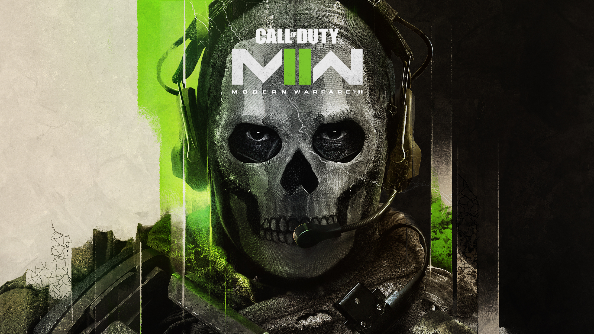
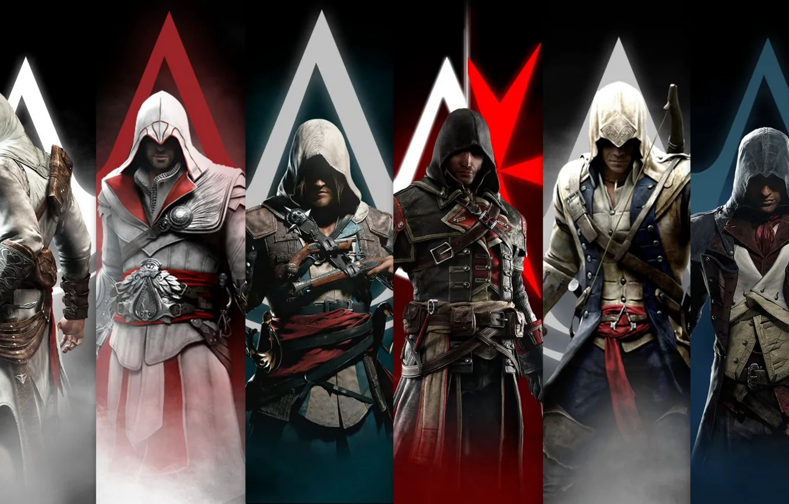
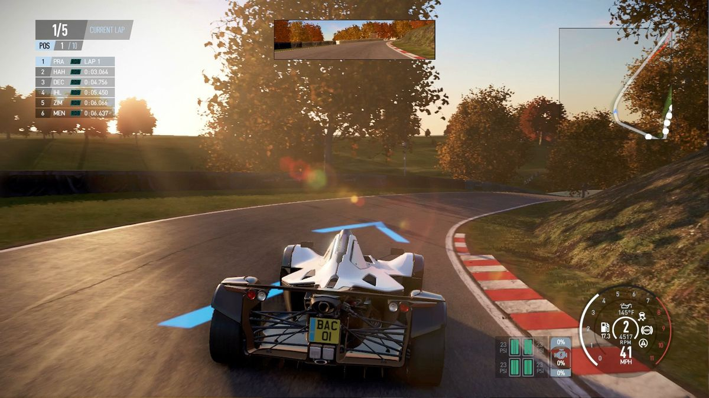
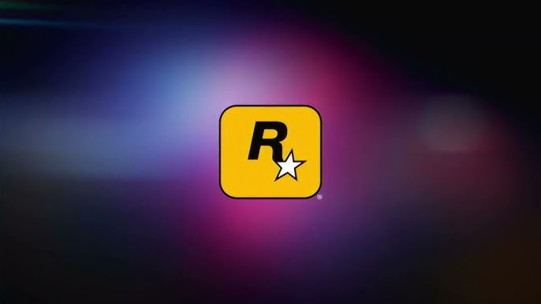
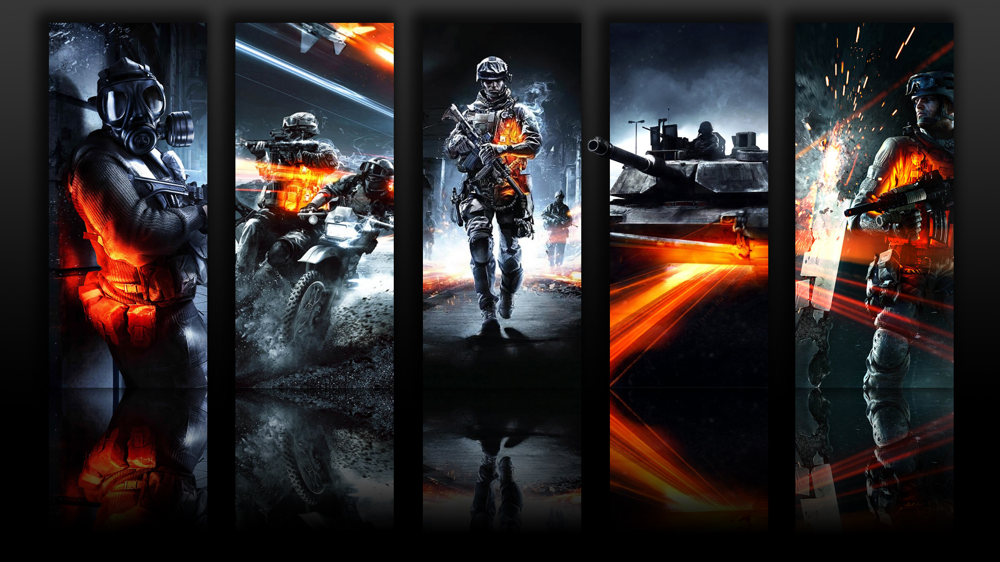
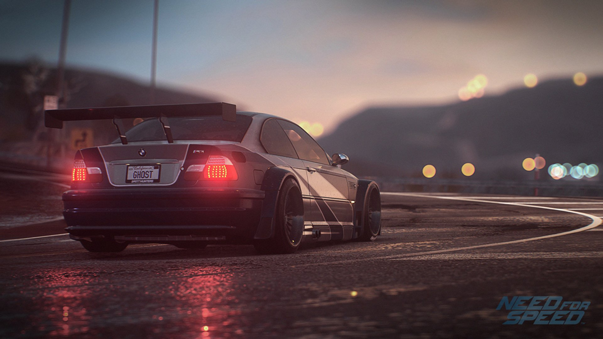

Gaming
Gaming is more than just entertainment—it's a way to develop problem-solving skills and strategic thinking. As a former gamer of the popular series like call of duty, battle field, Assassins creed, simracing, Rockstar games, TOMCLANCY ,and other indie games , I learned a lot and my thinking abilities got more sharper. [Fun fact I play only sniper mostly]
Favorite Games
- SIMULATION
- RPGs/OPENWORLD
- ADVENTURE
- FPS/ACTION/SNIPER

CALL OF DUTY

ASSASSIN'S CREED

RACING SIMULATION

GAME SERIES FROM ROCKSTAR GAMES

BATTLEFIELD

IYKYK